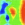

|
|
Field-Based QSAR Panel |
In this panel you can set up a field-based QSAR model (CoMFA/CoMSIA) from a set of aligned ligands, and use the model to predict activities for other molecules. You can also visualize the QSAR model in the Workspace and create a scatter plot of the activities.
For background information, see Field-Based QSAR Background.
To open the Field-Based QSAR panel, you can:
Choose Applications → Field-Based QSAR in the main window.
To generate a QSAR model, you must first ensure that the ligands are
aligned. If the ligands were exported from the Develop Common Pharmacophore
Hypotheses procedure, they should already be prealigned to the pharmacophore
model. You can use the Phase command-line tool pharm_align_mol to
align ligands to a hypothesis. In Maestro, you can use the Superposition panel (Tools →
Superposition) to align the ligands. The best choice is probably to align
by a SMARTS pattern for the ligand core.
The toolbar has two buttons, for controlling what is displayed in the Workspace for the model. The choice of fields and parameters can be made in the Field-Based QSAR Visualization Settings panelField-Based QSAR Visualization Settings panel, which you open by clicking QSAR Visualization. The buttons are not available until a model has been built.
|  | View Contours Display surfaces in the Workspace for each field that are contoured at a particular value ("isovalue") of the field. By default, the first field in the list in the Field-Based QSAR Visualization Settings panel is displayed. |
| View Intensities View the field intensities at each grid point as colored spheres. By default, the first field in the list in the Field-Based QSAR Visualization Settings panel is displayed. |
These buttons allow you to add ligands to the ligands table.
From Project—Opens the Add From Project dialog box, in which you can choose a set of entries, select an activity property, and assign training and test set memberships based on a property value.
From File—Opens a file selector, in which you can navigate to and select the file. When you click OK, the Choose Activity Property dialog box opens, in which you can select an activity property, converting it into the appropriate units if need be, and select a QSAR set property, to define the members of the training set and the test set by a value of this property.
The ligands you add must be fully prepared 3D structures that are properly aligned. No facility is provided in this panel for preparing the structures or aligning the ligands.
These buttons allow you to delete ligands from the ligands table. The Delete button deletes the selected ligands from the table. This allows you to change a model by removing ligands, or replacing ligands, for example. The Delete All button removes all ligands from the table. This is useful if you want to create a model with a different set of ligands.
This table contains the list of ligands. When the ligands are first read, all ligands are included in the training set, and the # Factors, Predicted Activity and Prediction Errorcolumns are empty. These columns are added after the QSAR model is built. The table columns are described below.
Most of the columns of this table are noneditable. You can change the activity values, select the training and test sets, and display the ligands in the Workspace. You can sort the table by the values in a column, by clicking the column heading. Use shift-click and control-click to select multiple rows.
| In | Inclusion status of the ligand. The diamond has a cross in it if the ligand is included in the Workspace, and is empty if the ligand is excluded. You can include and exclude ligands with click, shift-click and control-click. |
| Ligand Name | The name of the ligand. |
| QSAR Set | Indicates whether a ligand is in the training set, the test set, or neither (the ligand is ignored). The column is blank if the ligand is ignored. Click the column repeatedly to cycle the ligand through the three possible states. Control-click to cycle the selected ligands through the three states. The state for the selected ligands is set to the state for the row that is clicked. |
| Activity | The ligand's activity. You can alter the activity values by directly editing the table cells. |
| # Factors | Number of factors in the partial least squares regression model. |
| Predicted Activity | Activity predicted by the QSAR model. The number of rows in each cell is equal to the maximum number of PLS factors specified in the Build Model dialog box. Each row contains the prediction from a model containing the number of PLS factors indicated in the # Factors column. |
| Prediction Error | Error in the activity predicted by the QSAR model. |
| % Extrapolated | Percentage of field values for the ligand that lie outside the range found in the training set. |
These controls allow you to randomly select the training set.
Specify the percentage of ligands to include in the training set by random selection from the ligands in the union of the training set and the test set.
Click to apply a random selection of the training set from the ligands that are in the union of the training set and the test set. The ligands that are not selected are assigned to the test set.
Enter the seed for the random selection of the training set in this text box. A zero value means that a different seed will be selected each time, and hence a different training set. A nonzero value means that the same seed is used each time, which produces the same training set.
These buttons allow you to perform different actions on the QSAR model.
Build the model. Opens the Build Field-Based Model dialog box, in which you can specify parameters for building the model, and then build the model
Import an existing model. The model includes the ligands, the QSAR training and test set membership, and the regression information.
Generate predicted activities for the test set.
The QSAR Results table shows the statistics of the fit for the training set and the test set. Each row presents the results for a hypothesis. Within each row are lines for regression models with a particular number of partial least squares factors included. The QSAR Results table has the following columns:
| # Factors | Number of factors in the partial least squares regression model. | |
| SD | Standard deviation of the regression | |
| R^2 | Value of R2 for the regression. | |
| R^2 CV | Cross-validated R2 value, computed from predictions obtained by a leave-N-out approach. The value of N is specified in the Build Field-Based Model dialog box. | |
| R^2 Scramble | Average value of R2 from a series of models built using scrambled activities. Measures the degree to which the molecular fields can fit meaningless data, and should be low. | |
| Stability | Stability of the model predictions to changes in the training set composition. This statistic has a maximum value of 1 (meaning stable). | |
| F | Variance ratio. Large values of F indicate a more statistically significant regression. | |
| P | Significance level of variance ratio. Smaller values indicate a greater degree of confidence. | |
| RMSE | Root-mean-square error of the test set. | |
| Q^2 | Value of Q2 for the predicted activities of the test set. | |
| Pearson-r | Value of Pearson-r for the predicted activities of the test set. |
Display the fraction of each field in the QSAR model for each number of PLS factors used in the model. This information can give you a general idea of the overall relative impact of each field type on activity. For example, if steric and hydrophobic Gaussian field fractions are much larger than the other types (as is often the case), that suggests that most of the binding energy is coming from hydrophobic interactions.
The following buttons can be used to perform actions once a QSAR model is available.
Export the QSAR model to files. The model data is written to the named
file, for example mymodel.qsar. The ligands are written to a
Maestro file, which for the example given would be
mymodel_qsar_pred.mae.
Opens the Field-Based QSAR Visualization Settings panel, in which you can make settings for the visualization of the QSAR model in the Workspace.
Plot the predicted activity against the input (experimental) activity. Opens the Phase QSAR - Scatter Plot dialog box, in which you can select the number of PLS factors and the ligands to include in the plot, and choose to display the line of perfect fit. Clicking OK then opens the Scatter Plot panel to display the plot.
Predict the activity for one or more molecules. These molecules must exist as entries in the Project Table. Opens an entry chooser, in which you can choose the entries. The predicted activities are added as properties to the project entries.
|